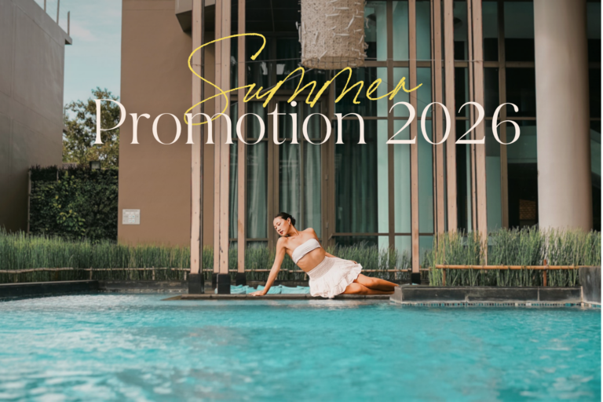
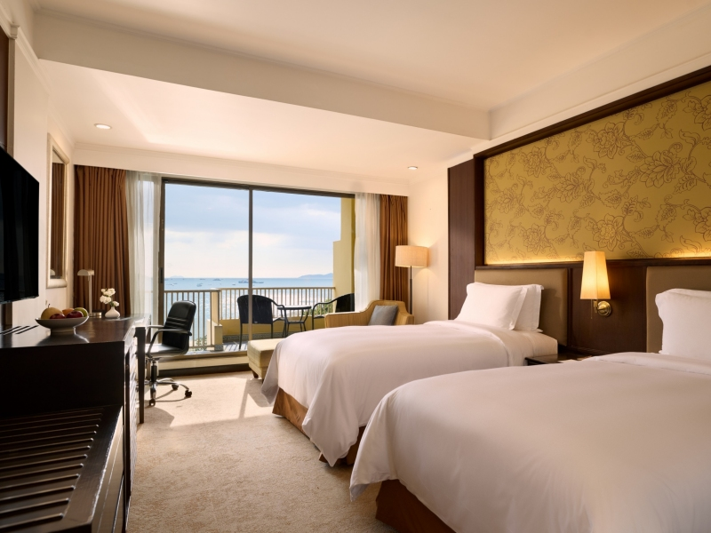

Enkel feriebase nær Bangkok
Pattaya ligger praktisk til for reisende som vil slippe innenriksfly. Du kan lande i Bangkok, kjøre videre til kysten og få både resortliv, shopping og dagsturer uten å bytte hotell flere ganger.
Pattaya er en stor strandby nær Bangkok. Guiden fokuserer på de områdene som fungerer best for ferie: Jomtien, Na Jomtien, Wongamat og familievennlige aktiviteter.
Pattaya passer best for deg som vil ha kort reisevei fra Bangkok, mange hotellvalg, enkel transport og et stort utvalg av strand, mat, spa og familieaktiviteter på samme sted.
Pattaya ligger praktisk til for reisende som vil slippe innenriksfly. Du kan lande i Bangkok, kjøre videre til kysten og få både resortliv, shopping og dagsturer uten å bytte hotell flere ganger.
Velg Jomtien, Na Jomtien, Wongamat eller Pratamnak for en ryddigere ferieopplevelse. Da får du strand og hotellkomfort, men kan fortsatt ta taxi inn til restauranter, rooftopbarer og aktiviteter.
Sentrum passer for korte stopp og shopping. Jomtien er mer avslappet, Na Jomtien har større resorter, Wongamat føles roligere, mens Pratamnak er et godt kompromiss mellom strand, utsikt og nærhet til byen.
Pattaya blir mye bedre når du velger område etter reisestil. Bo roligere enn sentrum, og bruk heller taxi når du vil ut på kvelden.
Roligere resortområde nord for sentrum, fint for par og familier som vil ha bedre hoteller, sjøutsikt og litt mer tilbaketrukket stemning.
Et mer avslappet strandområde med restauranter, strandpromenade og lavere tempo. Et trygt valg for familier og lengre opphold.
Passer best for resortferie, basseng, barnevennlige hoteller og aktiviteter som badeland. Du bor litt utenfor byen, men får mer feriekomfort.
Pattaya handler ikke bare om én strand. De beste dagene får du ofte ved å kombinere roligere hotellområder med en dagstur til Koh Larn.
Det mest praktiske valget for strand, mat og kveldsturer. Ikke den mest eksotiske stranden i Thailand, men enkel, sosial og fin for en rolig dag nær hotellet.
Bedre for deg som vil bo på resort og ha en penere, roligere strandfølelse. Flere av de beste hotellene ligger i eller nær dette området.
Den beste strandopplevelsen fra Pattaya. Ta speedbåt eller ferge ut til klarere vann, hvitere sand og vannaktiviteter som snorkling, jet ski og parasailing.
Pattaya har alt fra enkel sjømat og buffeter til rooftopmiddag. Kveldene kan gjøres rolige og pene, eller mer livlige hvis du ønsker det.
Velg sjømatrestaurant, buffet eller strandrestaurant på kvelder der du vil ha noe enkelt. King Seafood og lignende steder passer godt når gruppen vil spise mye og variert.
Rooftopbarer og hoteller med utsikt gjør Pattaya mer moderne og voksen i uttrykket. Legg dette til en kveld når du vil ha solnedgang, drinker eller middag med utsikt.
Sentrum kan være intenst. For en bedre ferieopplevelse er det lurt å velge ut ett område eller én kveld, og ellers bo i roligere soner som Jomtien, Wongamat eller Pratamnak.
Pattaya fungerer godt med barn når dagene planlegges rundt hotellbasseng, badeland, korte taxiturer og én stor aktivitet om gangen.
Velg Jomtien, Na Jomtien eller et hotell med gode basseng. Det gjør dagene enklere, spesielt når varmen og trafikken gjør lange utflukter slitsomme.
Legg inn badeland, Lost World eller Space & Time Cube som tydelige høydepunkter. Resten av dagen kan være basseng, strand og enkel middag.
Koh Larn er en fin dagstur, men ikke legg for mye rundt samme dag. Med barn er det bedre med én god opplevelse enn tre halvstressede stopp.
Hvert hotell er presentert med ekte bilder hentet fra hotellets egen nettside. Sjekk alltid pris og tilgjengelighet hos hotellpartneren.

Best for: Familie, aktiviteter, barn
Temahotell med vannparkfølelse, aktiviteter og enkel familieferie.

Best for: Par, familie, strand
Strandresort nær byen med utsikt, basseng og god balanse mellom ro og Pattaya.

Best for: Familie, klassisk resort
Klassisk resort med god plass, basseng og kort vei til strand og byliv.

Best for: Familie, leilighetshotell, sentralt
Moderne leilighetshotell i sentral Pattaya med praktisk base for shopping, strand og familieferie.

Best for: Par, design, roligere område
Designpreget hotell i roligere Pratamnak-område, fint for par som vil bo litt utenfor det travleste sentrum.
Sjømat, restauranter og stort utvalg.
Mat, småbutikker og en enkel familieutflukt.
Velg lokale markeder, småbutikker og en rolig kveld fremfor å fylle hele dagen med transport.
Start med transport og strand, legg inn badeland eller familieaktiviteter på dagtid, og spar spa, sjømat og rooftop til roligere ettermiddager og kvelder.

Praktisk valg når du vil rett fra Bangkok, flyplassen eller et annet område til hotellet i Pattaya uten stress med buss og bagasje.
Bestill transport hos Klook →
Dagstur med speedbåt til klarere vann, snorkling og valgfrie aktiviteter som parasailing, jet ski, banana boat og sea walking.
Se Koh Larn hos Klook →
En enkel vannparkdag for familier som vil ha sklier, basseng og en aktivitet som ikke krever lang transport eller mye planlegging.
Se Pattaya Water Park →
Stort temabasert badeland i Sattahip-området, best for en hel dag med barn, større bassengområder og filmtema.
Se Aquaverse hos Klook →
Aktivitetspark ved Centara Grand Mirage, fin for barn som trenger noe mer enn basseng og strand en halv dag.
Se Lost World hos Klook →
Digital kunst- og lysopplevelse innendørs. Passer godt på varme dager, regnvær eller som et lett stopp med barn og ungdom.
Se Space & Time Cube →
Rolig spaopplevelse i North Pattaya med massasje, aromabehandlinger og et mer gjennomført miljø enn enkel gate-massasje.
Se spa hos Klook →
Sjømatbuffet for deg som vil ha en enkel matkveld med mye å velge mellom. Passer fint for familier og grupper.
Se seafood buffet →
Rooftopmiddag på Grande Centre Point med utsikt. Godt valg for en penere kveld uten å gjøre Pattaya-opplevelsen for hektisk.
Se The Sky 32 →
Beachfront rooftop med panorama mot Pattaya. Passer best for solnedgang, drinker, småretter eller en roligere kveld med utsikt.
Se Virgin Rooftop →
En bookbar Pattaya-opplevelse fra GetYourGuide for deg som vil sammenligne guidede turer og attraksjoner ved siden av Klook-valgene.
Se hos GetYourGuide →
Passer for reisende som vil ha en ferdig organisert opplevelse med enkel booking og tydelige vilkår.
Se hos GetYourGuide →
Et ekstra valg for deg som vil sammenligne opplevelser på tvers av partnerne før du bestemmer deg.
Se hos GetYourGuide →
Bookbar opplevelse som gir flere alternativer på Pattaya-siden, ved siden av Klook-aktivitetene.
Se hos GetYourGuide →